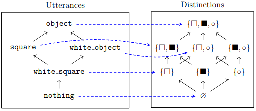

Gricean Pragmatics with Category Theory
Tags: math
I am doing the MIT OCW “Applied Category Theory” course, for “fun”. I had trouble solving one of the problems from Problem Set 1 by hand so I decided to try using my computer.
Problem Statement
Question 4. Gricean Pragmatics (with thanks to Reuben Cohn-Gordon).
Grice’s maxims for cooperative conversation say that a speaker should strive to say the maximally informative utterance that is nonetheless true. A speaker is pragmatic if they obey these maxims. We’ll model a pragmatic speaker with Galois connections.
Let W be a set of objects. For example, let W = \{\square, \blacksquare, \circ\}.
Suppose we know something about an object in the world. This is represented by a subset W' \subseteq W. The subset \{\square, \blacksquare, \circ\} represents the knowledge that the object exists, the subset \{\blacksquare, \circ\} represents the knowledge that the object is either \blacksquare or \circ, the subset \emptyset represents the knowledge that the object does not exist. Suppose we also have the poset U of utterances as on the left below. The literal listener L takes an utterance, and understands it as communicating something—a predicate—about an object in question. Let L : U \to P(W) be the monotone map shown in blue:

- The map L has a left adjoint S : P(W) \to U. For each of the eight distinctions W' \subseteq W, calculate S(W). For example, what is S(\square), what is S(\blacksquare), etc.?
- Explain how S can be understood as the pragmatic speaker.
Extra credit: In fact S happens to have a further left adjoint, which we might call the pragmatic listener L' : U \to P(W). Calculate it for extra credit, and explain its semantics in terms of a game where the speaker has a card, either \square, \blacksquare, or \circ, and the pragmatic listener has to guess it.
Solution with SageMath
It’s not too hard to solve this by hand, but let’s see a solution in SageMath. (I originally tried to use Catlab.jl, but its documentation was too incomplete to try.)
We start with an Enum for the different objects. It’ll make things
look slightly nicer later:
from enum import Enum
class Object(Enum):
WHITE_SQUARE = 1
BLACK_SQUARE = 2
WHITE_DOT = 3Now we define the poset P(W). Rather than creating our own custom
poset, we’ll use the builtin BooleanLattice poset. This is a little
annoying – BooleanLattice uses integers and so we’ll need to convert
Object -> int occasionally.
PW = posets.BooleanLattice(3, use_subsets=True)Next we’ll define the poset U. We’ll use a custom poset here: the first argument of the tuple will be the elements of the poset and the second argument will be the relations (i.e., pairs (x, y) with x \le y). Sage will take the transitive closure of the relations for us:
class Utterances(Enum):
OBJECT = 4
SQUARE = 3
WHITE_OBJECT = 2
WHITE_SQUARE = 1
NOTHING = 0
U = Poset(
(
Utterances,
[
[Utterances.SQUARE, Utterances.OBJECT],
[Utterances.WHITE_OBJECT, Utterances.OBJECT],
[Utterances.WHITE_SQUARE, Utterances.WHITE_OBJECT],
[Utterances.WHITE_SQUARE, Utterances.SQUARE],
[Utterances.NOTHING, Utterances.WHITE_SQUARE],
],
)
)Now we define a function which takes the left adjoint of its input.
from functools import reduce
def maybe_left_adjoint(P, Q, g):
"""Given g : Q -> P, return the left adjoint.
If the left adjoint does not exist,
the behavior of this function is undefined."""
def f(p):
return reduce(
Q.meet, (q for q in Q.list() if P.le(p, g(q)))
)
return fThis construction is given in the proof of the Adjoint Functor Theorem
for Preorders in Theorem 1.108. I’ve titled the function
maybe_left_adjoint because this construction may actually
create something which is not a left adjoint. If g has a left
adjoint, then we will return the right function, but it’s
possible that g doesn’t have a left adjoint at all.
Let’s define a function to verify that the returned function is indeed a
left adjoint. We’ll create is_left_adjoint based on Proposition 1.101
in the text.
def is_monotone(P, Q, f):
"""Check if f : P -> Q is monotone."""
return all(
(Q.le(f(x), f(y)) for x, y in P.relations_iterator())
)
def is_left_adjoint(P, Q, f, g):
"""Given f : P -> Q and g : Q -> P, check if f |- g"""
return (
is_monotone(P, Q, f)
and is_monotone(Q, P, g)
and all((P.le(p, g(f(p))) for p in P.list()))
and all((Q.le(q, f(g(q))) for q in Q.list()))
)With the precursors done, we can finally begin solving the problem.
Let’s define literal_listener:
def literal_listener(x):
match x:
case Utterances.OBJECT:
return frozenset((
Object.WHITE_SQUARE.value,
Object.BLACK_SQUARE.value,
Object.WHITE_DOT.value
))
case Utterances.SQUARE:
return frozenset((
Object.WHITE_SQUARE.value,
Object.BLACK_SQUARE.value
))
case Utterances.WHITE_OBJECT:
return frozenset((
Object.WHITE_SQUARE.value,
Object.WHITE_DOT.value
))
case Utterances.WHITE_SQUARE:
return frozenset((Object.WHITE_SQUARE.value,))
case Utterances.NOTHING:
return frozenset()
assert False, f'value not found: {x}'Here I’m using Structural Pattern Matching available in Python
3.10+. The annoying .value is to convert from the objects to integers
as I mentioned above.
Also note the use of frozenset. If we just used set, we’d get an
TypeError: unhashable type: 'set' error. This occurs since Sage will
attempt to use the inputs as keys into a dictionary, which requires the
type to be hashable. frozenset can be hashed, since it isn’t mutable.
At long last, we can get the answer to the question. Here’s part (a):
print("speaker")
speaker = maybe_left_adjoint(PW, U, literal_listener)
for p in PW.list():
print(p, "->", speaker(p))
print(
"is speaker left adjoint to literal_listener?",
is_left_adjoint(PW, U, speaker, literal_listener),
)which outputs:
speaker
{} -> Utterances.NOTHING
{2} -> Utterances.SQUARE
{1} -> Utterances.WHITE_SQUARE
{1, 2} -> Utterances.SQUARE
{3} -> Utterances.WHITE_OBJECT
{1, 3} -> Utterances.WHITE_OBJECT
{2, 3} -> Utterances.OBJECT
{1, 2, 3} -> Utterances.OBJECT
is speaker left adjoint to literal_listener? Trueand we can also do the extra credit:
print()
print("pragmatic_listener")
pragmatic_listener = maybe_left_adjoint(U, PW, speaker)
for q in U.list():
print(q, "->", pragmatic_listener(q))
print(
"is pragmatic_listener left adjoint to speaker?",
is_left_adjoint(U, PW, pragmatic_listener, speaker),
)which outputs:
pragmatic_listener
Utterances.NOTHING -> {}
Utterances.WHITE_SQUARE -> {}
Utterances.WHITE_OBJECT -> {3}
Utterances.SQUARE -> {2}
Utterances.OBJECT -> {2, 3}
is pragmatic_listener left adjoint to speaker? FalseI think the extra credit problem is actually wrong: pragmatic_listener (L')
isn’t left adjoint to speaker (S). In particular:
\texttt{white\_square} \not\le S(L'(\texttt{white\_square}))
since L'(\texttt{white\_square}) = \emptyset and S(\emptyset) = \texttt{nothing}. This contradicts Proposition 1.101 mentioned above, so we cannot have L' \vdash S. I’m not sure if this is a problem with the setup of this particular exercise or also a problem with the original blog post, and not yet sure what additional conditions are necessary to make things work out!
If you’d like to play with the code, here it is on SageMathCell.